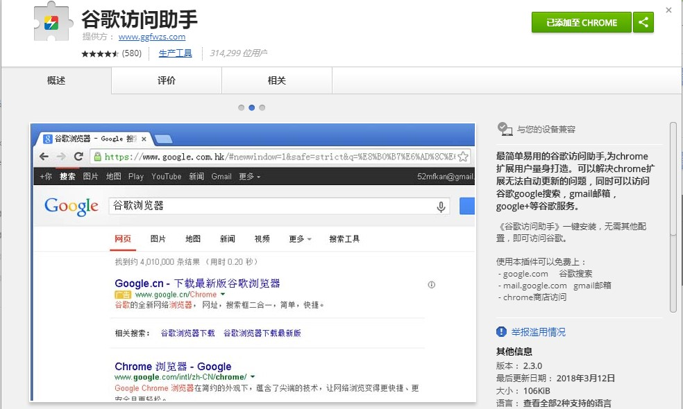

吐血推荐个人珍藏的chrome插件，持续更新...
LLhon
6月 28, 2018
前言
推荐一些我自己常用的chrome浏览器插件，都是精品。在chrome商店中搜索插件名称就可以安装使用，注意chrome商店是需要科学上网的，下面有个插件可以解决这个问题。
插件
1.谷歌访问助手
安装该插件后就可以免费访问谷歌搜索，gmail邮箱，chrome商店。注意是免费，速度也还ok，可以说是很良心了。

2.Tampermonkey
中文名油猴，这个插件就很牛逼了，可以使用各种脚本资源，VIP视频在线解析破解，百度网盘直接下载助手，全网音乐一键免费下载，豆瓣资源下载大师，…更多的自己去体验把
3.Stylish
装逼利器，这个插件可以为很多网站安装主题和皮肤，瞬间变得逼格满满。给你们看看我的github网站主题
4.Octotree
你是不是每次进入别人的github主页想看源码，都需要clone下整个项目，有了它，你就可以很方便的直接在左侧栏像树状的方式查看文件夹及源文件。（我就纳闷为啥github不给我们提供这个功能呢，还要我们自己去装个插件，简直了）
5.GitHub Plus
这个插件也是为了方便使用github，它可以对github上的项目中的文件进行单个单个下载，比如图片，我们有时并不想下载整个项目,这时它就派上用场了。
6.JSONView
看名字应该就知道了吧，它是用来格式化json数据的。开发者必备
7.vysor
这个插件可以让你的手机画面投影到电脑上来，类似于投影仪的效果
8.Momentum
教你如何优雅地使用chrome，新打开一个Tab的时候不再是一片空白，而是一副精美图片，给你们感受下